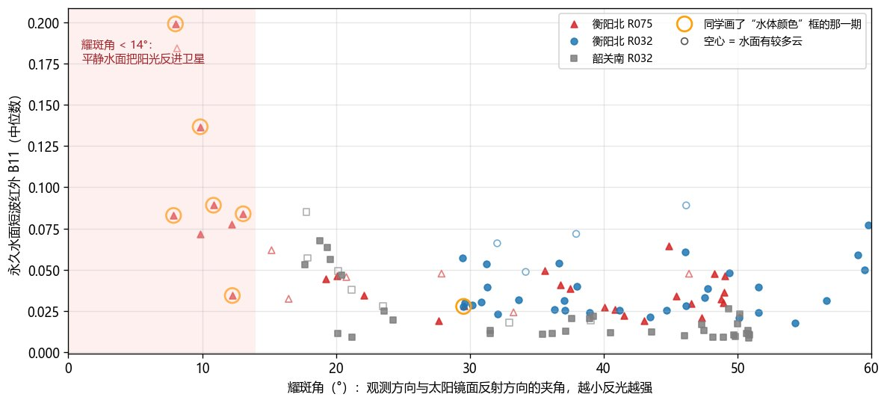
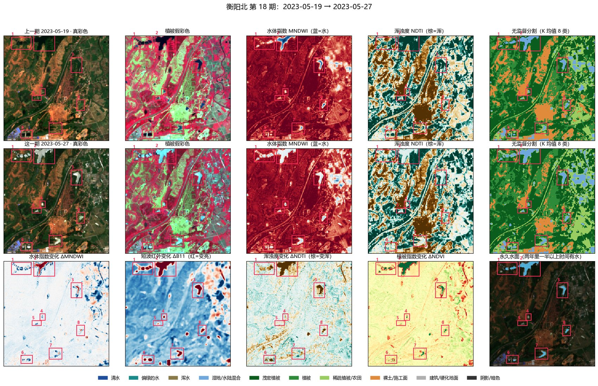
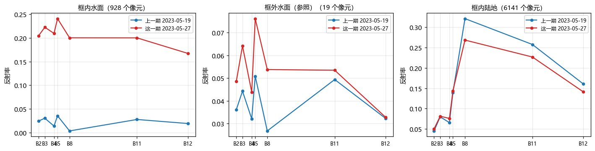
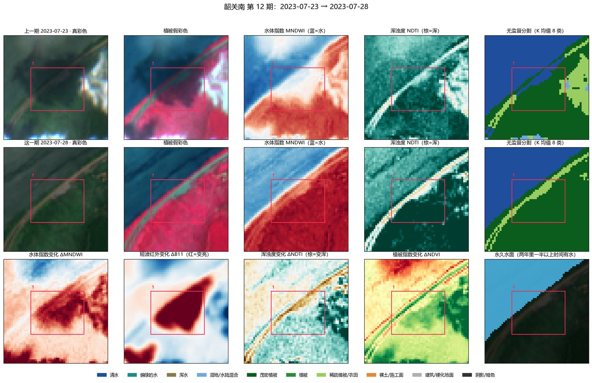

2.2.4 伪变化抑制
前言
影像差异可以分三类：由观测条件造成的表观变化；真实发生、但不属于关注对象的无关变化；需要检出的相关变化。本项目所说的伪变化主要指第一类。农田收割、植被的季节消长和水位涨落属于第二类，它们是真实的地表变化，应当保留并记录其周期性，而不是简单剔除。
主要来源：几何错位（半个像元的错位就会在道路、田埂、水边留下成对条带）；云、云影与光照（云影让植被和道路变暗、薄雾让颜色发灰，冬季太阳低、坡面阴影远大于夏季）；辐射差异（处理基线更新引入的反射率偏移）；分类不稳定（分割后比较中边界像元的类别跳变）。
伪变化样本
伪变化研究所需的样本在第一轮标注时同步准备，不等模型出现误报后再补：
| 类别 | 内容 |
|---|---|
| 正样本 | 确认的真实变化，包括收割、退水等周期性变化（周期特征记在属性中） |
| 普通负样本 | 经过核查的稳定区域 |
| 困难负样本 | 地物稳定但外观差异明显的区域：阴影范围改变的坡面、薄雾下的植被、有错位的道路和建筑边缘、反光的水面 |
| 不可判读 | 厚云和完全遮挡的区域，不作为负样本 |
首轮模型训练后，再从训练集和验证集中整理典型误报，按原因归类补充到困难样本中；测试集在整个方法开发过程中保持独立。对真实影像施加已知幅度的平移，可以构造不同程度的错位样本。
三个测点已经发现的干扰
衡阳北夏季的水面反光（太阳耀斑）
首批出现的同步发白现象是水面反光；随后逐框复核又区分出了反光期中的真实水情和农田变化。不能把一幅有反光的影像中全部框都判为伪变化；以下图例说明纯耀斑的证据。
- 光谱特征：反光那一期，水面反射率从可见光到短波红外几乎平直地升到 0.1—0.2。水对短波红外吸收很强，泥沙、藻类都做不到；同时陆地没有变亮，排除了云和薄雾。
- 几何原因：R075 轨道从西北偏西观测衡阳北（偏离天底约 8°），夏季上午太阳在东南偏东、天顶角 16—20°，卫星接近阳光在水面的镜面反射方向，耀斑角只有 8—13°；R032 从东南偏东观测，耀斑角约 30°。
- 同样条件都会出现：两年中耀斑角 8—13° 的 9 景有 8 景水面明显变亮（包括没被画框的几期）；耀斑角 27° 以上全部正常。
- 不是积水：拍摄前 72 小时降雨与水面范围对不上——大雨的 R032 期水面没有变多，无雨的 R075 期反而“变多”。



云影
韶关南 2023-07-23 框中发暗的林地是云影：旁边就有亮白的云，暗斑在云的背光一侧（当天太阳在正东，暗斑在云的西边），短波红外在 23 日异常低、28 日恢复。这类区域应在第一步圈为“看不清”。

其他
- 薄雾与清晰度：衡阳北 2023-06-03 整幅有薄雾，全幅陆地的蓝光明显偏高，与后一期对比时颜色差异来自薄雾。
- 冬季地形阴影：冬季太阳高度角低，阴坡明显变暗，容易被误判为水体（判读图鉴中有例子）。
- 处理基线偏移：2022 年 1 月后反射率偏移为 −1000，个别影像标签写错，已统一修正。
复核规则的后续修正（2026-10-06）
纯耀斑不框；反光中真实涨落或农田变化结合清楚影像核实后仍记录。只是水色变清/变浑不等于水面扩大。收割、返青和短期洪水即使以后恢复也是真变化，“下一年仍在”只能区分长短期，不能决定真假。
前图选择、框内云/缺测忽略、范围扩展后的未审区、配准边缘与框外候选保护已落实到e版。原因码是复核提示，不自动删除候选；新增处理按相同召回/独立参考检验。训练中质量旁支、指数差、增强和归一化已有分批实验，完整结果状态见方法改进。
方法对照
| 方法 | 针对的干扰 | 作用 |
|---|---|---|
| ECC、LoFTR | 几何错位 | 精配准与残余误差检查（前期已用） |
| ChangeRD、DiffRegCD | 未充分对齐的影像 | 配准与变化检测联合学习 |
| SCL、s2cloudless、OmniCloudMask | 云与云影 | 生成质量掩膜，遮挡区标为不可观测 |
| IR-MAD 与分块伪不变特征归一化 | 辐射与色调差异 | 以不变地物为参照作相对辐射归一化（前期已用） |
| 分割后规则筛选 | 分类不稳定 | 置信度、历史新颖度与时序众数（前期已用） |
| CDDGNet | 跨季节、跨地区的外观差异 | 因果解耦变化语义与域因素 |
| SCDistill | 光照与大气扰动 | 合成语义不变的扰动并自蒸馏 |
| CCDC | 物候与周期性变化 | 以长期时序背景识别偏离 |
| 耀斑角标记（本项目） | 水面反光 | 用每景官方太阳与卫星角度计算耀斑角，标出可能反光的影像 |
比较伪变化抑制方法时，以相近召回率下的误报数量为准；每次只加入一个处理环节，其余条件不变。
代码与数据
- analyze.py逐框光谱指数、永久水面、无监督分割、云掩膜
- geometry.py太阳与卫星角度、耀斑角
- extent_series.py抗反光的水面范围时间序列
- report.py复核报告生成